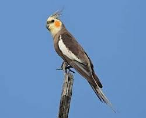
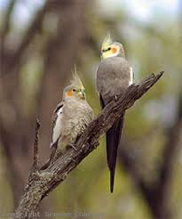
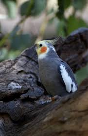

Who am I?

I am cockatiel. I am a talented whistler. Male cockatiels in particular are known for their whistle serenades, which can be directed at their favored person, their favorite object or their mirror reflection. When not whistling or keeping themselves busy foraging for food and fun around the cage, cockatiels often enjoy spending their downtime snuggling on their favored person's shoulder.
SearchYou can find me in Australia. This open environment might be a reason why I don't have the ear-piercing screech of parrots originating from rain-forest habitats.
Wild cockatiels fly to the ground to forage for food. Cockatiels readily breed in the wild, and they are also easy to breed in captivity.
Wild cockatiels are always on alert for predators. A pet cockatiel might have an occasional night-fright episode, where it thrashes around the cage at night.
